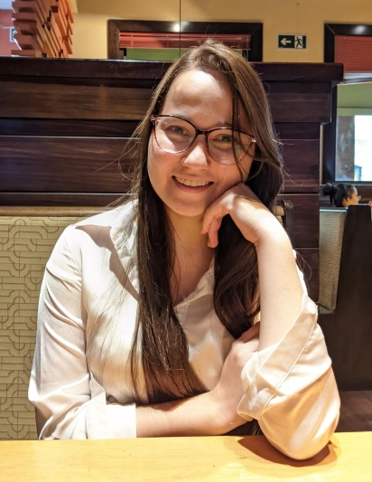

Currículo
- Nome: Linda Apolônia Dalva Gomes da Silva Coutinho
- Idade: 26 anos
- Estado Civil: Casada
- Endereço: Av. Forte do Leme - São Mateus
- Contato: lindaapoloniadalva@hotmail.com
Formação
- Auxiliar de enfermagem (2013-2013) - Escola de Enfermagem São Bernardo
- Técnico de Enfermagem (2014-2015) - Escola de Enfermagem São Bernardo
- Especialização Técnico de Hemodiálise (2020-2020) - Hospital Santa Marcelina
- Bacharelado em Fonoaudiologia (2022-cursando o segundo semestre) Unicid
Experiências
- Instituto Cora (2017-2018) - Auxiliar de enfermagem - Exercendo cuidados com idosos.
- Hospital Vermelhinho (2018-2019) - Auxiliar de enfermagem - Exercendo cuidados na pediatria.
- Hospital Salvalus (2019- Atualmente) - Auxiliar de enfermagem - Exercendo cuidados na UTI e atualmente no P.S. gestante.
